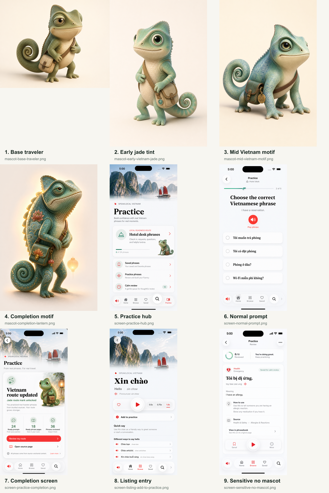
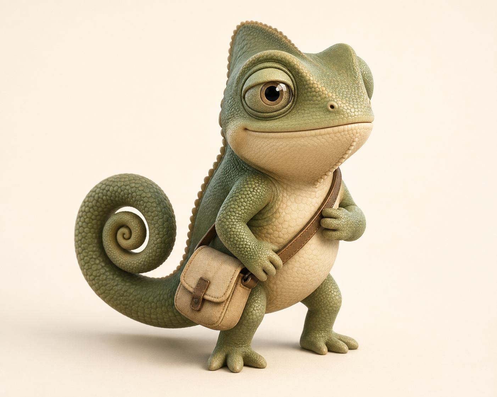
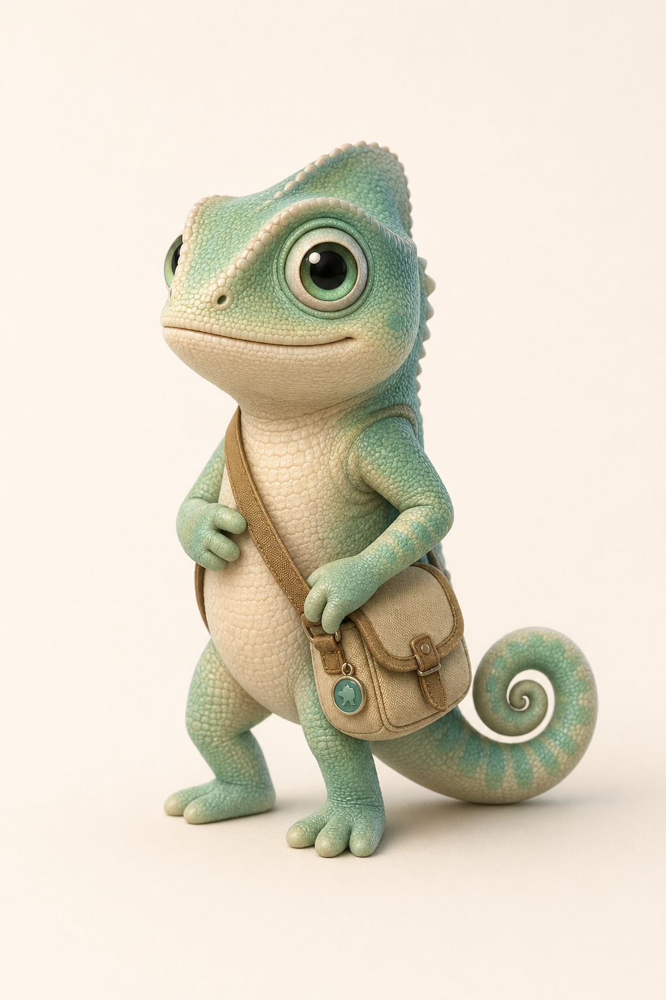
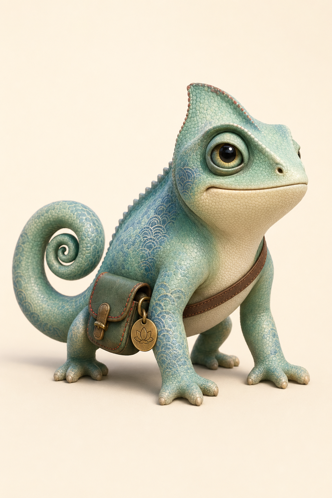
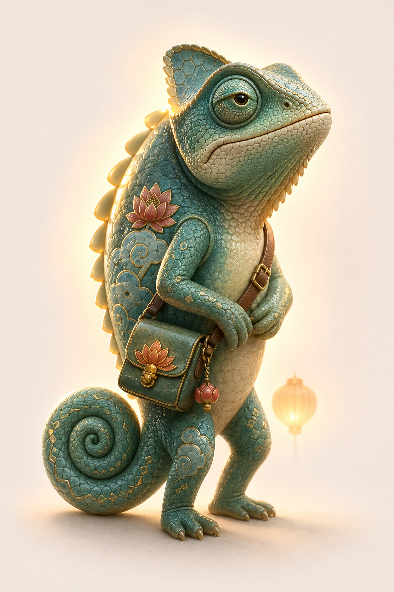
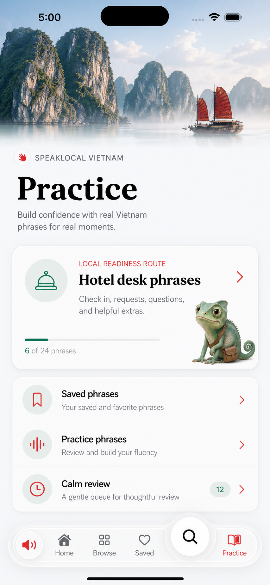
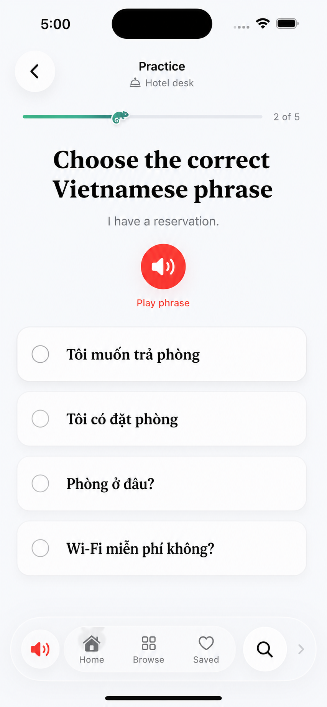
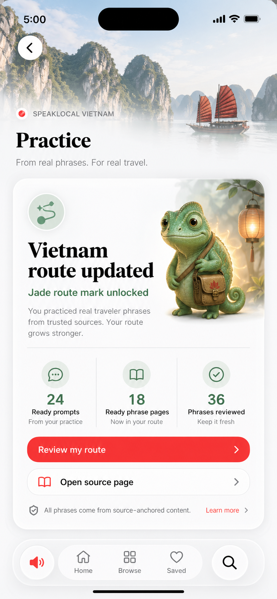
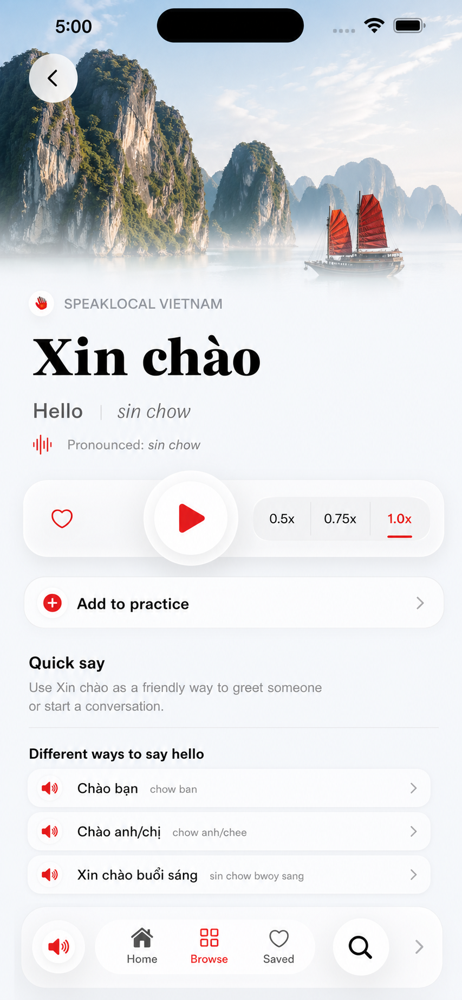
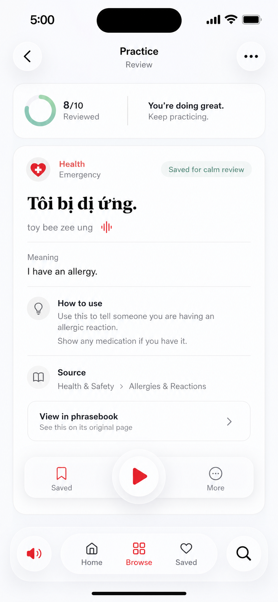

Premium 3D chameleon, jade/sea-glass progression, small travel satchel, native white/glass screen language.
High-Fidelity Mascot Concepts
Generated raster concepts for the Speak Local chameleon mascot and its native iOS Practice integration. The contact sheet is the fastest review view; individual images are below for closer inspection.
Simplify completion ornament density and translate generated screen typography back to native SF in SwiftUI.
Costume energy, mascot-first UI, game rewards, bottom-chrome mascot placement, and sensitive-context character presence.










Prompt details: prompt-packet.md. Result receipt: task result.